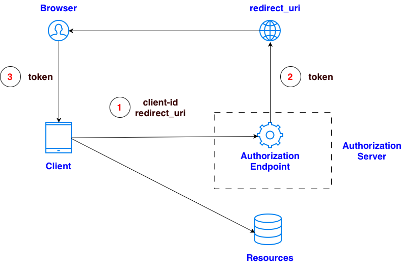
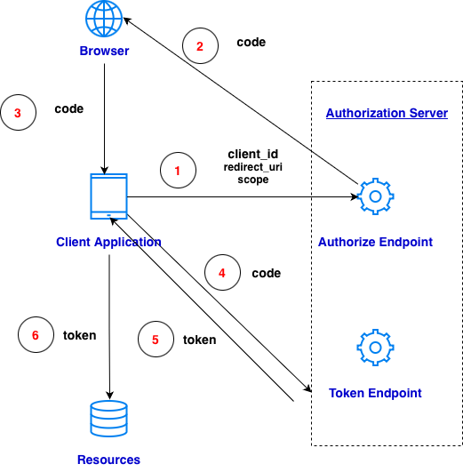
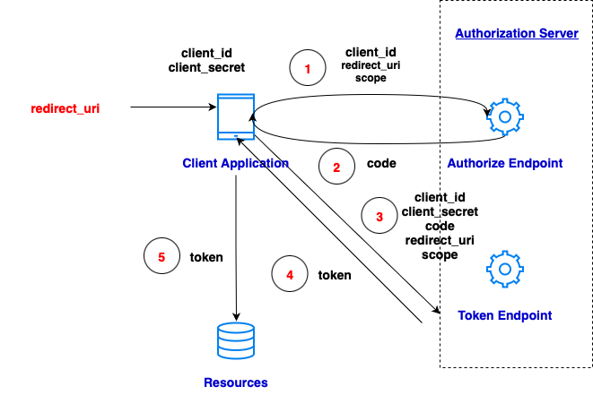
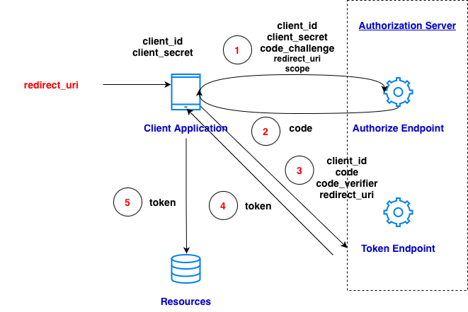
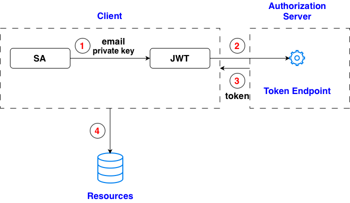

from flask import Flask, request, jsonify, render_template_string
import requests
app = Flask(__name__)
# Home page: button to start implicit flow
@app.route("/")
def home():
return render_template_string("""
<h2>Google Contacts - Implicit Flow Demo</h2>
<a href="/login">Login with Google</a>
""")
# Redirect user to Google
@app.route("/login")
def login():
client_id = "107858899591-23696e1ca9vs61meo0h1pqfgo5j74cep.apps.googleusercontent.com"
redirect_uri = "http://localhost:8080/auth"
scope = "https://www.googleapis.com/auth/contacts.readonly"
auth_url = (
"https://accounts.google.com/o/oauth2/v2/auth"
"?response_type=token"
f"&client_id={client_id}"
f"&redirect_uri={redirect_uri}"
f"&scope={scope}"
"&prompt=consent"
"&include_granted_scopes=false"
)
return f"<script>window.location='{auth_url}'</script>"
# The redirect page receives the access_token in the URL fragment
@app.route("/auth")
def auth():
return render_template_string("""
<h3>Google OAuth Redirect</h3>
<p>Extracting access token…</p>
<script>
// Extract the fragment part (#access_token=....)
const hash = window.location.hash.substring(1);
const params = new URLSearchParams(hash);
const token = params.get("access_token");
if (!token) {
document.body.innerHTML = "<p>No token found.</p>";
} else {
document.body.innerHTML = "<p>Access token received. Fetching contacts...</p>";
// Send token to Flask backend
fetch("/fetch_contacts", {
method: "POST",
headers: {"Content-Type": "application/json"},
body: JSON.stringify({ access_token: token })
})
.then(resp => resp.json())
.then(data => {
document.body.innerHTML = "<h3>Your Contacts</h3><pre>" + JSON.stringify(data, null, 2) + "</pre>";
});
}
</script>
""")
# Flask backend: receives token from browser & calls Google People API
@app.route("/fetch_contacts", methods=["POST"])
def fetch_contacts():
data = request.get_json()
access_token = data.get("access_token")
print('Access token: ', access_token)
headers = {
"Authorization": f"Bearer {access_token}"
}
url = "https://people.googleapis.com/v1/people/me/connections"
params = {
"pageSize": 50,
"personFields": "names,emailAddresses"
}
response = requests.get(url, headers=headers, params=params)
return jsonify(response.json())
if __name__ == "__main__":
app.run(port=8080, debug=True)

from google_auth_oauthlib.flow import Flow
from googleapiclient.discovery import build
# ======================================
# CONFIGURATION
# ======================================
SCOPES = ["https://www.googleapis.com/auth/contacts.readonly"]
CREDENTIALS_FILE = "credentials.json"
# ======================================
# STEP 1: Initialize flow
# ======================================
flow = Flow.from_client_secrets_file(
CREDENTIALS_FILE,
scopes=SCOPES,
redirect_uri="urn:ietf:wg:oauth:2.0:oob" # special URI for non-local environments
)
# ======================================
# STEP 2: Get authorization URL
# ======================================
auth_url, _ = flow.authorization_url(prompt="consent")
print("\n🔗 Go to this URL and authorize the app:\n")
print(auth_url)
# ======================================
# STEP 3: Paste authorization code
# ======================================
code = input("\n📋 Enter the authorization code here: ").strip()
# ======================================
# STEP 4: Exchange code for token
# ======================================
flow.fetch_token(code=code)
creds = flow.credentials
print("✅ Access token obtained successfully.")
# ======================================
# STEP 5: Use the credentials with People API
# ======================================
service = build("people", "v1", credentials=creds)
results = service.people().connections().list(
resourceName="people/me",
personFields="names,emailAddresses",
).execute()
connections = results.get("connections", [])
print(f"✅ Retrieved {len(connections)} contacts")
for person in connections:
names = person.get("names", [])
emails = person.get("emailAddresses", [])
if names:
print("Name:", names[0].get("displayName"))
if emails:
print("Email:", emails[0].get("value"))

import os
from flask import Flask, redirect, request, session
from google_auth_oauthlib.flow import Flow
from googleapiclient.discovery import build
os.environ['OAUTHLIB_RELAX_TOKEN_SCOPE'] = '1'
os.environ["OAUTHLIB_INSECURE_TRANSPORT"] = "1"
app = Flask(__name__)
app.secret_key = os.urandom(24)
CLIENT_SECRETS_FILE = "../authorization_code_credentials.json"
SCOPES = ["https://www.googleapis.com/auth/devstorage.read_write"]
REDIRECT_URI = "http://localhost:8080/callback"
@app.route("/")
def index():
# Create OAuth2 Flow (NO PKCE)
flow = Flow.from_client_secrets_file(
CLIENT_SECRETS_FILE,
scopes=SCOPES,
redirect_uri=REDIRECT_URI
)
authorization_url, state = flow.authorization_url(
access_type="offline",
include_granted_scopes="true",
prompt="consent"
)
session["state"] = state
return redirect(authorization_url)
@app.route("/callback")
def callback():
# Reconstruct flow with the same redirect_uri + state
flow = Flow.from_client_secrets_file(
CLIENT_SECRETS_FILE,
scopes=SCOPES,
redirect_uri=REDIRECT_URI,
state=session["state"]
)
# This extracts ?code=XXX and exchanges for token
flow.fetch_token(authorization_response=request.url)
credentials = flow.credentials
# Use credentials to access Google Cloud Storage
service = build("storage", "v1", credentials=credentials)
buckets = service.buckets().list(project="spheric-gasket-476418-h5").execute()
return {
"message": "Success!",
"buckets": buckets.get("items", [])
}
if __name__ == "__main__":
app.run("localhost", 8080, debug=True)

from google_auth_oauthlib.flow import InstalledAppFlow
from google.oauth2.credentials import Credentials
from google.cloud import storage
# 1. OAuth settings
CLIENT_SECRET_FILE = "credentials.json"
SCOPES = ["https://www.googleapis.com/auth/devstorage.read_only"]
# 2. Start Authorization Code Flow
flow = InstalledAppFlow.from_client_secrets_file(
CLIENT_SECRET_FILE,
scopes=SCOPES
)
# This opens a browser for Google Login
# use a local host as redirect_uri
creds = flow.run_local_server(port=0)
# 3. Use official Cloud Storage client
storage_client = storage.Client(credentials=creds, project = 'project_id')
# 4. List buckets
buckets = list(storage_client.list_buckets())
bucket_names = [b.name for b in buckets]
bucket_names
import os
import base64
import hashlib
import secrets
from flask import Flask, redirect, request, session, jsonify
import json
import google.auth.transport.requests
import requests
from google.oauth2.credentials import Credentials
from google.cloud import storage
app = Flask(__name__)
app.secret_key = os.urandom(24)
# OAuth configuration
with open("credentials.json") as f:
data = json.load(f)["web"]
CLIENT_ID = data["client_id"]
CLIENT_SECRET = data["client_secret"]
REDIRECT_URI = data["redirect_uris"][0]
AUTH_URL = "https://accounts.google.com/o/oauth2/v2/auth"
TOKEN_URL = "https://oauth2.googleapis.com/token"
SCOPES = "https://www.googleapis.com/auth/devstorage.read_only"
# ---- Generate PKCE values ----------------------------------------------------
def generate_pkce_pair():
code_verifier = base64.urlsafe_b64encode(secrets.token_bytes(32)).rstrip(b"=").decode()
code_challenge = base64.urlsafe_b64encode(
hashlib.sha256(code_verifier.encode()).digest()
).rstrip(b"=").decode()
return code_verifier, code_challenge
# ---- Step 1: Login -----------------------------------------------------------
@app.route("/")
def index():
return '<a href="/login">Login with Google</a>'
@app.route("/login")
def login():
# Generate a PKCE verifier & challenge
code_verifier, code_challenge = generate_pkce_pair()
# Store in session
session["code_verifier"] = code_verifier
# Build Google authorization URL
auth_url = (
f"{AUTH_URL}?client_id={CLIENT_ID}"
f"&redirect_uri={REDIRECT_URI}"
f"&response_type=code"
f"&scope={SCOPES}"
f"&code_challenge={code_challenge}"
f"&code_challenge_method=S256"
f"&access_type=offline"
f"&prompt=consent"
)
return redirect(auth_url)
# ---- Step 2: Handle callback --------------------------------------------------
@app.route("/callback")
def callback():
code = request.args.get("code")
code_verifier = session["code_verifier"]
# Exchange authorization code for tokens
data = {
"client_id": CLIENT_ID,
"client_secret": CLIENT_SECRET,
"code": code,
"grant_type": "authorization_code",
"redirect_uri": REDIRECT_URI,
"code_verifier": code_verifier,
}
token_response = requests.post(TOKEN_URL, data=data).json()
# Store OAuth credentials in session
session["credentials"] = token_response
return redirect("/list_buckets")
# ---- Step 3: Use Google Cloud Storage API -----------------------------------
@app.route("/list_buckets")
def list_buckets():
if "credentials" not in session:
return redirect("/login")
creds_info = session["credentials"]
creds = Credentials(
creds_info["access_token"],
refresh_token=creds_info.get("refresh_token"),
token_uri=TOKEN_URL,
client_id=CLIENT_ID,
client_secret=CLIENT_SECRET,
scopes=[SCOPES],
)
# add quota project so Cloud Storage works
storage_client = storage.Client(credentials=creds, project="project_id")
buckets = [b.name for b in storage_client.list_buckets()]
return "<h3>Your Buckets:</h3><pre>" + "\n".join(buckets) + "</pre>"
if __name__ == "__main__":
app.run(port=8080, debug=True)

import time
import json
import jwt # PyJWT
import requests
# Load your service account file
with open("key.json") as f:
sa = json.load(f)
private_key = sa["private_key"]
client_email = sa["client_email"] # service account email
# Google OAuth token URL
token_url = "https://oauth2.googleapis.com/token"
# Scopes required
scope = "https://www.googleapis.com/auth/devstorage.read_write"
# JWT claim set
issued_at = int(time.time())
expires_at = issued_at + 3600 # 1 hour
payload = {
"iss": client_email,
"scope": scope,
"aud": token_url,
"exp": expires_at,
"iat": issued_at,
}
# Create signed JWT (RS256 using service account private key)
signed_jwt = jwt.encode(
payload,
private_key,
algorithm="RS256"
)
print("Signed JWT:")
print(signed_jwt)
# OAuth token request
response = requests.post(
token_url,
data={
"grant_type": "urn:ietf:params:oauth:grant-type:jwt-bearer",
"assertion": signed_jwt,
}
)
token_response = response.json()
print("OAuth Token Response:")
print(json.dumps(token_response, indent=2))
access_token = token_response["access_token"]
project_id = sa["project_id"]
headers = {
"Authorization": f"Bearer {access_token}"
}
url = f"https://storage.googleapis.com/storage/v1/b?project={project_id}"
resp = requests.get(url, headers=headers)
print("Buckets:")
print(resp.json())